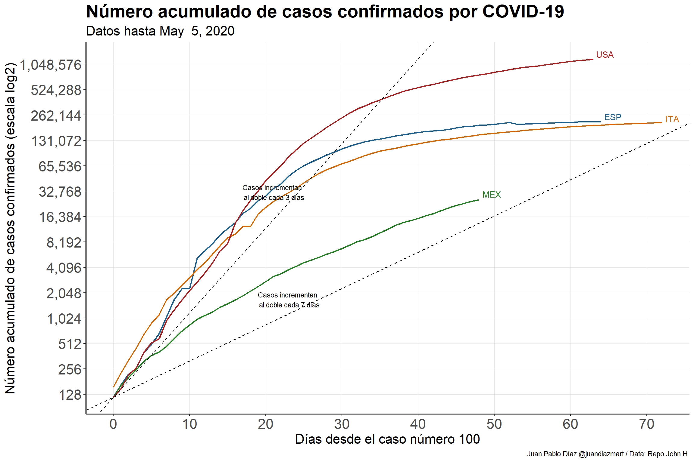

Table of Contents
Resumen ejecutivo
Los coronavirus son una familia de virus que suelen causar enfermedades en animales, aunque algunos pueden afectar también a humanos. En las personas pueden producir infecciones respiratorias que pueden ir desde un resfriado común hasta enfermedades más graves. En el 80% de los casos, la infección por este nuevo coronavirus, denominado oficialmente SARS-Cov-2, produce síntomas respiratorios de carácter leve. Con el nombre de COVID-19 se denomina la enfermedad respiratoria producida por este virus. Hasta el día de hoy (Apr 15) se han confirmado en nuestro país 5,847 casos y 449muertes. Mucho se ha hablado de la importancia del distanciamiento social ya que, de no hacerlo, se traduciría en hospitales saturados y tristemente en un gran número de muertes.
Debido a la importancia de lo anterior, decidí escribir este post con los siguientes objetivos:
- Resumir la situación de la epidemia por COVID-19 en nuestro país, tomando en cuenta el funcionamiento del sistema de vigilancia epidemiológico en nuestro país
- Estimar el impacto que han tenido las diferentes medidas de mitigación realizadas por el gobierno federal a través de las muertes observadas por COVID-19 en nuestro país mediante un modelo jerárquico bayesiano propuesto aquí: Este modelo también estimó que tan rápido se infectan las personas (número efectivo de reproducción) y el total de pacientes infectados con SARS-COV2 a través del tiempo. Dado que el modelo estima el efecto que han tenido las medidas decretadas por el gobierno federal, fue posible predecir el número de muertes acumuladas que pueden ocurrir en los siguientes 7 días.
Los resultados son los siguientes: el 0.47% (95% CrI: 0.20% - 1.00%) de la población en nuestro país se encuentra infectada con SARS-COV2 hasta Apr 15. Desde que se exhortó al distanciamiento social mediante la campaña “Susana Distancia”, el número de reprodución efectivo esperado fue de 2.1 (95% CrI: 1.5 - 2.7), lo que implica que una persona infecta a 2.1 personas.
De acuerdo a los resultados, el número acumulado de muertes seguirá incrementando en los próximos 7 días. Si bien se observó que “Susana Distancia” ha logrado reducir el número de muertes, no se ha logrado disminuir lo suficiente el número efectivo de reproducción1. Estas esimaciones son de gran utilidad ya que podrán servir para por ejemlo, realizar estimaciones del uso de recursos, especial el número de ventiladores que se necesitarán en los siguientes meses.
Introducción
Este post nace despúes de 4 semanas de distanciamento social en Toronto, Canadá. Para los que no me conocen, actualmente soy doctorante en la Universidad de Toronto donde mi línea de investigación es el aprendizaje estadístico como herramienta de predicción en enfermedades que tienden a progresar a a través del tiempo (e.g. cáncer). Cuento con una posición de investigador asociado en University Health Network el cual aglomera diferentes hospitales para una mejor colabaración en diferentes temas de investigación.
Es importante notar que este post no ha sido revisado por pares y que mi línea de investigación no es el modelaje de enfermedades infecciosas. Lo que sí he hecho es apoyar a un grupo de investigadores en la provincia de Ontaro en Canadá en la creación de modelo para simular la utilización de recursos en hospitales por COVID-19. Este post tiene como objetivo discutir algunos aspectos importantes de la epidemia en nuestro país y por estimar el impacto de las diferentes medidas de mitigación en nuestro país utilizando el número de muertes como nuestra variable observable. El link para el código de este post se encuentre en un repositorio de Github el cuál podrán encontrar al final de este post; las gráficas y el análisis fueron hechos en R, utilizando en su mayoría librerías como dplyr, ggplot2,rstan entre otras.
Epidemia en México
Mucho se ha hablado en las conferencias vespertinas relacionadas a COVID-19 acerca del número de casos nuevos desde que la epidemia llegó a nuestro país y si el gobierno ha hecho pruebas suficientes. Antes de describir de cualquier análisis es importante describir dos aspectos importrantes respecto a las características epidemiológicas en nuestro país: 1. Cómo funciona el sistema epidemiológico 2. Cómo se alimenta diariamente el número de casos confirmados
Sistema epidemiológico en México
El Dr. Hugo López Gatell ha mencionada en muchísimas ocasiones como funciona el sistema centinela en nuestro país (la siguiente entrevista es muestra de lo anterior). A manera de resumen, la idea del programa es que “en vez de recopilar grandes cantidades de datos de calidad deficiente, hay que concentrarse en recopilar datos de buena calidad de un número reducido de centros centinela seleccionados cuidadosamente”, de acuerdo al documento de la OMS actualizado en 2014. El proceso es buscar COVID-19 en pacientes negativos a la prueba de influenza para ver si hay transmisión comunitaria; Alberto Díaz Cayeros hace una descripción de éste y discute posibles fallas que pueden ocurrir en este sistema.
Este sistema funcionó para H1N1 en el 2009 y todos esperamos que funcione para COVID-19. ¿Por qué utilizar este sistema y no pruebas masivas como lo hizo Corea del Sur? Creo que es por dos razones: el sistema ha funcionado y es eficiente debido las limitaciones de recursos en Salud en nuestro país. Es importante aclarar que estas limitaciones no son nuevas y es producto de un porcentaje muy bajo del gasto en el sector salud como porcentaje del PIB durante varios años de acuerdo a la OCDE.
Casos confirmados
El 28 de febrero fue confirmado el primer paciente con COVID-19 en nuestro país. Desde el 23 de marzo se han modificado los criterios operacionales para la vigilancia epidemiológica de COVID-19. Como se ha mencionado en diferentes medio de comunicación (nota aquí) la definición es la siguiente:
Caso sospechoso - Persona de cualquier edad que en los últimos siete días haya presentado al menos dos síntomas de tos, fiebre o cefalea, es decir, dolor de cabeza intenso y persistente y que esté acompañado de los siguientes signos: dificultad para respirar, hinchazón en articulaciones con dificultad de movimiento, dolor muscular, ardor de garganta, rinorrea, conjuntivitis y dolor de tórax.
Caso confirmado - Persona que cumpla lo anterior y que cuente con confirmación del InDRE.
Asimismo, se modificó el porcentaje de muestreo para vigilar los casos de COVID-19. Solo se realizará la prueba al 10% de los casos sospechosos sin síntomas o síntomas leves. A su vez, se realizará la prueba al 100% de los casos sospechosos con sintomología grave o que cumplan con la definición infección respiratoria aguda grave (IRAG). Es importante recalcar que el gobierno ha recalcado que todos los casos sospechosos sin importar si se les realizó la prueba deberán de permanecer en aislamiento . # Análisis de la epidemia en México Antes de presentar datos y gráficas me gustaría enfatizar en 2 aspectos importantes al considerar la presentación y análisis de datos de casos confirmados con COVID-19:
- La comparación entre países (e.g. incidencia acumulada) debe de realizarse con mucho cuidado. Esto debido a lo expuesto en la sección anterior; los países tienen distintos sistemas epidemiológicos y diferentes recursos, por lo tanto la cantidad de casos confirmados está en función de la cantidad de pruebas que puedan realizar. Es muy importante recalcar esto ya que esta comparación es la que más noticias engañosas y falsas que al menos yo he encontrado en redes sociales (ver aquí).
- La comparación entre países debe de realizarze desde un punto en común en el tiempo ya que la epidemia entra a cada país en momentos distintos. Esto tiene mucha importancia sobre todo al presentar gráficas e ilustraciones ya sea para mostrar la incidencia (casos nuevos) o incidencia acumulada.
¿Qué sí podemos rescatar cuando comparamos casos confirmados entre diferentes países?. La siguiente gráfica muestra el número de casos confirmados acumulados con COVID-19 desde que se comfirmó el paciente número 100. Decidí transformar el eje de las \(y\) al aplicarle el logaritmo base 2; esta transformación ayuda a una mejor interpretación de los datos ya que es más fácil para el lector ver cuanto tiempo se tarda un país en tener el doble de casos confirmados en un periodo determinado de tiempo. Asimismo al transformar los datos la serie de tiempo presenta un comportamiento más lneal.

México desde que llegó el caso número 100 ha tenido un incremento al doble de casos confirmados cada 3 días, con una ligera pendiente menor después de 5 días desde que llegó a su caso 100. Al final es esta pendiente la que queremos que se haga 0, es decir, aplastarla para que la curva de casos acumulados se “aplane”. Si queremos comparar países no nos fijemos en el número de casos acumulados. Fijémonos mejor en sus pendientes y como éstas cambian a través del tiempo. Si los procedimientos epidemiológicos descritos anterormente no cambian, la pendiente de México podría incrementar si por ejemplo aumentan considerablemente los casos graves.
Dado que es difícil comparar casos confirmados por todo lo explicado en párrafos previos, pienso que es más fácil comparar el número de muertes2. La siguiente gráfica nos ayuda a entender el comportamiento de número de muertes acumuladas en nuestro país desde que se presentó la quinta muerta.

Estos datos son los que personalmente me preocupan ya que México podría llegar a 4,000 muertos aproximadamente 20 días después del quinto deceso si las muertes incremental al doble cada 2 días (mismo caso que España). Volvemos al punto central que discutí en los datos de casos confirmados, lo importante es ver cuánto cambia la pendiente a través del tiempo. Hay que tener en cuenta que muchas de las muertes no serán diagnosticadas como muertes por COVID-19 (eso pasa en México y en otros países), por eso mientras el aumento sea constante no habría de preocuparse por esta sub-estimación.
Estimación del número de infectados y del impacto de Susana Distancia.
Debido a la naturaleza e importancia de la enfermedad, diferentes revistas indexadas en el mundo han acelerado su proceso de revisión para poder publicar diferentes artículos académicos referentes al SARS-COV 19. A mí siempre me han llamado la atención aquellos artículos que describen modelos de predicción.
En la sección anterior mencioné que es mejor utilizar el número de muertes si queremos hacer algún tipo de comparación o inferencia. Algunas limitaciones de este número son:
- Posible sub-estimación de muertes por COVID 19 - Esto debido a que habrá casos donde SARS-COV 19 no haya sido identificado.
- Posible retraso en la captura de muertes - Hemos visto en algunas conferencias vespertinas casos donde la confirmación de SARS-COV 19 llega después del fallecimiento.
Estas limitaciones no afectarán ningún modelo o inferencia que se quiera realizar siempre y cuando ambas se mantengan constantes en el tiempo.
¿De qué manera se puede estimar el número de infectados y el impacto de las medidas realizadas por el gobierno federal para incentivar el distanciamiento social? Utizando la historia natural de la enfermedad. El Imperial College de Reino Unido publicó el 30 de marzo un modelo modelo de predicción de muertes, infectados y efectos de diferentes medidas para “aplanar la curva”. Con el fin de tener una mejor imagen de lo que pasa con COVID-19, el anterior modelo fue adaptado utilizando los datos oficiales reportados en nuestro país. La Figura 1 muestra el modelo de predicción.

Figure 1: Modelo de predicción
El modelo utiliza las muertes observadas de acuerdo a los datos oficiales del gobierno de México.La Figura 1 muestra el nivel jerárquico (de abajo hacia arriba) que nos permite relacionar el impacto de diferentes intervenciones (i.e. cierre de escuelas,etc.) y las muertes observadas. Dada la relación que existe entre los diferentes parámetros a estimar, el modelo realiza la inferencia utilizando un enfoque Bayesiano mediante stan, un lenguaje de programación específco para inferencia Bayesiana. La relación entre los parámetros se explica a grandes razgos a continuación utilizando la misma notación que el modelo original.
Muertes observadas
Día con día el gobierno federal nos infroma de el número de muertes observadas \(D_t\) para los d+ias \(t\in1,...,n\). Estas muertes diarias son modeladas utilizando el valor esperado de las muertes diarias, es decir, \(d_t=\mathbf{E}[D_t]\). El modelo asume que \(D_t\) tiene una distribución binomial negativa3 con los siguientes parámetros:
\[D_t\sim binomial \space neg \left(d_t,d_t+\frac{d_t^2}{\phi} \right)\] \[\phi \sim N^+(0,5)\] donde \(\phi\) tiene una distribución normal truncada. El número esperado de muertes \(d\) en un determinado día es una función del número de infecciones \(c\) que ocurrieron en días previos. Para poder unir las muertes con los casos infectados, se utilizó la tasa de mortalidad por infección (\(ifr\), infection mortality rate en inglés) que toma en cuenta tanto a los detectados como los no detectados4 y el tiempo que pasa entre la infección y la muerte, la cual denotamos con \(\pi\). Si bien no hay un dato para México hasta el momento para \(ifr\), se utilizó la tasa de mortalidad por infección reportado en el mismo estudio. Este valor correspondió a 0.9%.
El modelo asume (basado en evidencia previa) que \(\pi\) es una suma de dos tiempos independientes: el tiempo de incubación(tiempo entre infección y sintomas) y el tiempo entre síntomas y muerte. Claramente estos tiempos son aleatorios y por lo tanto se les asigna una distribución de probabilidad (Gamma5). Por lo tanto \(\pi\) está dado por:
\[\phi\sim ifr((Gamma(5.1,0.86)+Gamma(18.8,0.45))\] Ahora que ya sabemos que \(\pi\) representa la distribución entre el tiempo de infección y muerte ajustada por la tasa de mortalidad por infección, se puede relacionar el número esperado de muertes en un determinado día \(d_t\) con \(pi\) de la siguiente manera:
\[d_t=\sum_{\tau=0}^{t-1} c_t\pi_{t-\tau}\] donde \(c_\tau\) es el número de nuevas infecciones en el día \(\tau\) y donde \(\pi\) es discretizado. La ecuación anterior nos dice que el número de muertes esperadas al día \(t\) puede ser expresado como la ponderación entre el número de infecciones en días pasados y la probabilidad de morir.
Infecciones en el modelo
Hasta ahora he resumido la relación que puede existir entre el número de muertes y el número de infecciones al día \(t\). Para modelar el número de infecciones en el tiempo es necesario especificar el tiempo que pasa entre el inicio de síntomas de una persona y el inicio de síntomas de otra persona infectada por la primera (en inglés se conoce como serial interval). De acuerdo a la literatura el promedio de este tiempo ronda entre los 4 días y 8 días, por lo que el modelo asume que éste tiene una distribución gamma6 con los siguientes parámetros:
\[ g(\tau) \sim Gamma(6.5,0.62)\] El número de infecciones \(c_t\) al día \(t\) está dada por la siguiente función:
\[c_t=R_t\sum_{\tau=0}^{t-1} c_\tau g_{t-\tau}\] donge \(g\) también es discretizada. Lo anterior implica que las infecciones al dia de hoy dependen de las infecciones en días pasados, ponderadas por la distribución \(g\). Esta ponderación es ajustada por el numero efectivo de reproducción 7 \(R_t\). Éste número cambia con respecto al tiempo debido a que la implimentación de diferentes medidas de mitigación en teoría hará que éste disminuya y por lo tanto haya menos contagios.
La idea es empezar con un número de reproduciión basal \(R_0\)8 y que este se irá modificando en el tiempo debido a la implementación de diferentes intervenciones como Susana Distancia en nuestro país.
El modelo utiliza las siguientes intervenciones:
Aislación voluntaria al ser detectado con SARS-COV2 - Se asume que esta medida fue implementada unos días después del primer caso confirmado con COVID-19 (28 de febrero). Decidimos utilizar el 3 de marzo como el tiempo en que se implementa la medida para dar tiempo a que ésta medida fuera difundida en todo el país cuando se presentaron los primeros casos.
Cancelación de eventos públicos - Se asume como el día (Marzo 17) en que el gobierno de la CDMX decidió cancelar todos los eventos públicos en la ciudad.
Cierre de escuelas - Se asume como el día (Marzo 21) en que la UNAM suspendió clases clases.
Exhortación al distanciamiento social - Inicio de Susana Distancia (Marzo 23).
Para falicitar la estimación de \(R_t\), se utiliza una función por partes que modifique \(R_t\)a partir de un valor inical \(R_0\) y ademas que el efecto de cada intervención es multiplicativa. Por lo tanto el número efectivo de reproducción \(R_t\) es una función de la implementación de cada intervención al día \(t\):
\[R_t=R_0exp(-\sum_{k=1}^{4}\alpha_{k}I_{k,t})\]
donde I es una variable indicadora donde toma el valor de 1 y la intervención \(k\) es implementada \(k=1,...,4\) y 0 si no. Asimsmo:
\[\alpha_{k}\sim Gamma(.5,1)\] La distribución de \(R_0\) fue asumida con base en la evidencia previa:
\[R_0\sim Normal(2.4,|\kappa|),\space \kappa\sim Normal(0,0.5)\] Finalmente el modelo asume que las nuevas infecciones ocurren 30 días antes de que el país haya acumulado 10 muertes observadas.
Resultados
El modelo estima que para Apr 15, el número acumulado de infectados por SARS-COV2 en nuestro país es de 593,816 (95% CrI: 255,563 - 1,268,013) (ver Figura XX). Lo anterior representa al 0.47% (95% CrI: 0.20% - 1.00%) de la población total en nuestro país, utilizando los datos de CONAPO para 2020 (127 millones de mexicanos aproximadamente).
Al inicio de la epidemia en México, el número efectivo de reproducción \(R_t\) era de 3.2 (95% CrI: 2.4 - 5.0). Después de que el gobierno implementó “Susana Distancia” el 23 de Marzo, éste descendió a 2.1 (95% CrI: 1.5 - 2.7)
Figure 2: Número acumulado de confirmados por COVID-19, observados y predichos
![Efecto de las intervenciones en R[t]](mexico-covid_files/figure-html5/unnamed-chunk-2-1.png)
Figure 3: Efecto de las intervenciones en R[t]
Una de las ventajas de este modelo es que nos permite hacer predicciones del número acumulado de muertes, utilizando \(R_t\) estimado en Apr 15 y su contrafactual9 (\(R_t\) al inicio de la epidemia en nuestro país);estas predicciones se muestran en la Figura XX. Con estos resultados es posible estimar cuantas muertes se han evitado hasta el día de hoy, lo anterior se obtiene al calcular la diferencia entre ambas predicciones (region azul menos región roja de la Fiugra XX enApr 15). Gracias a las medidas de mitigación se han podido evitar 941 (95% CrI: 198 - 11,993) muertes.
Figure 4: Número acumulado de muertes por COVID-19, observados y predichos
Lo ideal es que éste se encuentre debajo de uno↩
Recordemos que a todos los graves sí se les realiza la prueba↩
Asumo que utlizaron esta distribución para permitir la posible sobredispersión.↩
recordemos que la tasa de letalidad solo contempla a los detectados mientras la tasa de mortalidad por infección contempla a todas las personas infectadas↩
Parametrizada con la media de la distribución y su coeficiente de variación↩
Misma parametrización↩
Este es el número de casos, en promedio, que van a ser causados por una persona infectada durante el periodo de contagio↩
Para los que vieron Contagio seguro recordarán que esta expresión es conocida como el número básico de reproducción (R-naught en inglés)↩
Lo que pudo haber ocurrido↩